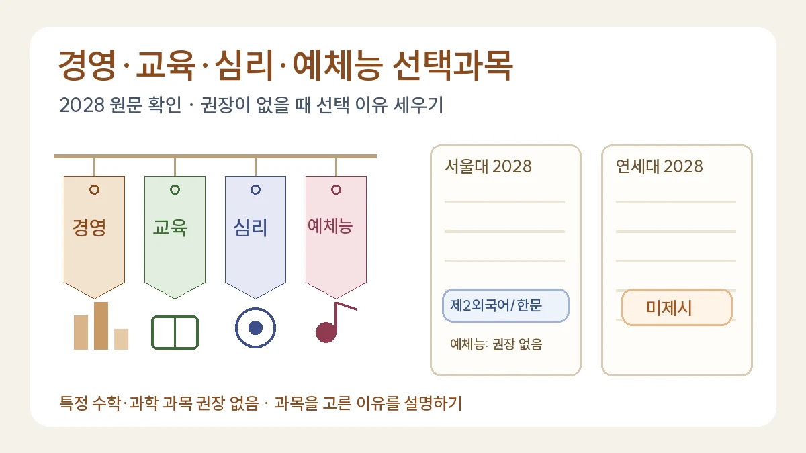

경영·교육·심리·예체능 학과 선택과목: 서울대·연세대 2028 원문으로 본 권장과 미제시
권장과목이 없을수록 선택 이유가 중요해집니다
목차
- 두 대학 원문에서 네 학과는 어떻게 적혀 있나
- ‘미제시’는 아무 과목이나 들어도 된다는 뜻이 아닙니다
- 학과별로 과목을 고르는 이유 세우기
- 과목과 이어지는 탐구 질문 예시
- 예체능 희망자의 실기와 학업 계획
- 자주 묻는 질문
- 공식 근거와 확인 범위
핵심 요약
- 서울대: 경영대학·사범대학 교육학과·사회과학대학은 제2외국어/한문 1과목 이상 권장, 미술·음악·체육교육과는 권장과목 없음
- 연세대: 경영·상경·문과·교육과학·음악대학은 전공연계과목 미제시
- 미제시는 아무 과목이나 된다는 뜻이 아니라 선택 이유를 학생이 설명해야 한다는 뜻

경영학과, 교육학과, 심리학과, 예체능 계열을 희망하는 학생이 가장 많이 묻는 것은 “무슨 과목을 꼭 들어야 하나요?”입니다. 서울대와 연세대의 2028학년도 문서를 직접 읽어 보면 답은 짧습니다. 이 학과들에는 특정 수학·과학 과목이 권장되어 있지 않습니다. 서울대는 대부분 ‘제2외국어/한문 1과목 이상’ 한 줄만 적었고, 예체능 모집단위는 권장과목이 없습니다. 연세대는 모두 ‘전공연계과목 미제시’입니다.[1][2] 그래서 이 글은 과목 목록을 외우게 하기보다, 권장이 없을 때 과목을 고르는 이유를 어떻게 세우는지에 집중합니다.
1. 두 대학 원문에서 네 학과는 어떻게 적혀 있나
- 경영학과: 서울대 경영대학은 ‘제2외국어/한문 교과(군) 1과목 이상’ 권장 유형에 있습니다(PDF 2쪽, 인쇄 1쪽).[1] 연세대 경영대학과 상경대학은 ‘전공연계과목 미제시’ 목록에 있습니다(PDF 2쪽).[2]
- 교육학과: 서울대 사범대학 교육학과도 같은 제2외국어/한문 유형입니다.[1] 연세대 교육과학대학은 미제시 목록에 있습니다.[2] 서울대 사범대학 안에서도 수학교육과·물리교육과 등은 수학·과학 권장 유형에 따로 들어 있으니, ‘사범대는 다 같다’고 읽으면 안 됩니다(PDF 3쪽, 인쇄 2쪽).[1]
- 심리학과: 서울대 심리학과가 속한 사회과학대학은 제2외국어/한문 유형, 연세대 심리학과가 속한 문과대학은 미제시 목록에 있습니다.[1][2] 두 문서는 모집단위를 단과대학 단위로 적기 때문에, 희망 학과가 어느 단과대학에 속하는지 대학 학과 안내에서 먼저 확인해야 합니다.
- 예체능: 서울대 미술대학, 음악대학, 사범대학 체육교육과는 일반·진로·융합 선택 모두 ‘-’로 권장과목이 없습니다(PDF 4쪽, 인쇄 3쪽).[1] 연세대 음악대학도 미제시 목록에 있습니다.[2]
제2외국어/한문 권장은 지원자격이 아닙니다. 서울대는 권장과목이 지원자격과 무관하지만 이수 여부를 수시 서류평가와 정시 교과역량평가에 반영한다고 밝혔습니다(PDF 1쪽).[1] 반영 방식이 궁금하다면 ‘권장’과 ‘지원자격’, ‘성적 반영’을 나눠 읽는 법을 정리한 대학별 반영과목 원문 대조법을 함께 보세요.
2. ‘미제시’는 아무 과목이나 들어도 된다는 뜻이 아닙니다
두 대학 모두 권장과목이 없는 모집단위에 대해 같은 방향을 적었습니다. 서울대는 “학생의 진로와 적성에 따라 과목을 선택하여 적극적으로 이수하기를 권장”한다고 했고, 연세대도 진로와 적성에 따른 선택과 이수를 권장했습니다.[1][2] 연세대는 평가 원칙에서 특정 과목 이수 여부만으로 평가하기보다 주어진 교육환경에서 해당 교과영역을 얼마나 충실하게 이수했는지를 본다고 밝혔습니다(PDF 1쪽).[2]
즉 권장이 없으면 학생이 이유를 설명할 책임이 커집니다. 과목명을 모으는 것보다 “이 과목에서 무엇을 배우려고 했고, 그 배움이 다음 과목이나 탐구에서 어떻게 쓰였는가”를 말할 수 있어야 합니다.
3. 학과별로 과목을 고르는 이유 세우기
아래 과목 연결은 편집팀의 판단입니다. 대학의 권장 문구가 아니며, 학교마다 개설 과목과 학기가 다릅니다. 과목명은 2022 개정 교육과정 총론의 과목표를 따랐습니다(PDF 38~39쪽, 인쇄 26~27쪽).[3]
- 경영학과 — 숫자로 의사결정을 설명하는 힘: 확률과 통계, 경제 수학, 실용 통계는 매출·수요 자료를 읽는 도구가 되고, 경제, 금융과 경제생활은 그 숫자가 놓인 시장의 규칙을 설명합니다. 교양의 인간과 경제활동도 선택지입니다.
- 교육학과 — 사람이 배우는 과정을 관찰하는 힘: 사회와 문화, 교육의 이해, 인간과 심리가 직접 연결됩니다. 학습 자료를 비교하고 해석하려면 확률과 통계도 쓸모가 있습니다.
- 심리학과 — 마음을 측정하는 방법을 의심하는 힘: 심리학은 설문과 실험 자료를 통계로 다루는 학문이라 확률과 통계, 실용 통계가 중요하고, 뇌와 행동의 생물학적 바탕을 보려면 생명과학이 이어집니다. 인간과 심리, 사회와 문화도 함께 고려할 수 있습니다.
- 예체능 — 실기 기록을 학업과 연결하는 힘: 음악 연주와 창작, 음악 감상과 비평, 미술 창작, 미술 감상과 비평, 스포츠 과학처럼 전공과 맞닿은 과목이 있습니다. 체육 교과는 매 학기 이수하도록 되어 있다는 점도 시간표에 반영합니다(총론 PDF 39쪽, 인쇄 27쪽).[3]
선택 이유 고쳐 쓰기(심리학과 희망, 가상 예시)
수정 전: 심리학과에 가려면 심리 관련 과목이 중요하다고 해서 인간과 심리를 신청했다.
수정 후: 희망 대학 두 곳 모두 심리학과에 특정 과목을 권장하지 않았다. 1학년 통합사회에서 본 설문 결과가 질문 문구에 따라 달라지는 이유가 궁금해, 설문 해석에 필요한 확률과 통계와 마음의 작동을 다루는 인간과 심리를 같은 학년에 배치했다.
4. 과목과 이어지는 탐구 질문 예시
아래는 과목 내용에서 출발하는 교육용 예시입니다. 실제 학생이 수행한 활동이나 결과가 아닙니다.
- 경영 × 확률과 통계: 매점의 가상 판매 기록에서 우유 하루 판매량이 20, 24, 18, 30, 28개라면 평균은 24개입니다. 그런데 30개가 팔린 날이 행사일이었다면 평균만 보고 다음 주 발주량을 정해도 될까요? 행사일을 빼면 평균은 22.5개가 됩니다. ‘평균이 바뀌는 이유를 어떻게 기록할 것인가’를 질문으로 삼으면 통계 개념과 경영 판단을 함께 설명할 수 있습니다.
- 교육 × 사회와 문화: 같은 단원을 ‘교과서 요약 노트’와 ‘문제 만들기’ 두 방식으로 복습했을 때 학생들이 어려워한 지점이 어떻게 다른지, 설문 문항을 먼저 설계하고 한계를 적습니다. 실제 설문은 학교의 허락과 개인정보 보호 기준 안에서만 진행합니다.
- 심리 × 확률과 통계: “아침을 먹으면 집중이 잘된다”는 문장을 검증하려면 무엇을 비교해야 할까요? 아침을 먹는 학생이 원래 수면 시간도 길다면 차이가 아침 때문인지 알 수 없습니다. 상관과 인과를 구분하는 문단을 쓰는 연습이 됩니다.
- 예체능 × 과학·감상: 체육 희망자는 스포츠 과학에서 배운 개념으로 같은 동작의 기록 변화를 해석하고, 음악·미술 희망자는 감상과 비평 과목에서 한 작품을 두 가지 기준으로 비교한 뒤 자기 작품 계획에 무엇을 옮길지 적습니다.
탐구 질문을 더 좁히는 방법은 인문사회계열 탐구 주제 예시와 인문사회·상경 계열 정책 한계 분석에 정리했습니다.
5. 예체능 희망자의 실기와 학업 계획
예체능 계열은 실기고사 비중이 큰 전형이 많아 학업 계획이 뒤로 밀리기 쉽습니다. 실기 종목, 반영 비율, 수능·학생부 반영 방식은 대학과 전형마다 다르고 이 글에서 확인하지 않았으므로, 지원 학년도 모집요강에서 직접 확인해야 합니다. 그 대신 시간표를 짤 때 아래 순서를 권합니다.
- 실기 준비에 필요한 주당 시간을 먼저 적습니다.
- 학교 편성표에서 전공과 연결되는 예술·체육 과목의 개설 학기를 찾습니다.
- 남는 칸에 국어·영어·수학·탐구 과목을 배치하되, 실기 준비가 몰리는 학기에 학점 부담이 큰 과목이 겹치지 않는지 봅니다.
- ‘왜 이 과목을 골랐는지’를 실기와 연결된 한 문장으로 남깁니다.
가상 예시(미술 희망 고1의 2학년 계획)
2학년 1학기: 미술 창작, 문학, 확률과 통계 / 2학년 2학기: 미술 감상과 비평, 미술과 매체, 사회와 문화.
선택 이유: 1학기 창작 수업에서 만든 작품을 2학기 감상과 비평의 기준으로 다시 평가하고, 매체 수업에서 디지털 작업으로 옮겨 보려고 배치했다.
6. 자주 묻는 질문
경영학과는 미적분을 꼭 들어야 하나요?
이번에 읽은 두 대학 문서에서 경영대학에 미적분 권장은 없습니다.[1][2] 다만 대학 수업의 경제·재무 과목은 수학을 많이 쓰므로, 학교 여건과 진로 계획에 맞춰 스스로 판단하세요. 수능 응시 과목과 정시 반영 방식은 별도의 문서입니다.
제2외국어/한문을 학교에서 못 들으면 불리한가요?
서울대 문서는 권장 여부만 밝히고 미개설 학교의 처리 방식을 따로 적지 않았습니다. 연세대는 개설됐지만 듣지 않은 경우와 개설되지 않아 들을 수 없었던 경우를 구분해 평가한다고 적었습니다(PDF 1쪽).[2] 공동교육과정이나 온라인학교로 들을 수 있는지 담당 교사와 상담하세요.
심리학과는 문과인가요, 이과인가요?
두 대학 모두 심리학과를 인문·사회 쪽 단과대학에 두고 특정 과목을 권장하지 않았습니다. 그렇지만 학문 내용에는 통계와 생물학이 많이 들어갑니다. 계열 이름보다 내가 궁금한 질문에 필요한 과목이 무엇인지로 판단하는 편이 낫습니다.
2026년 고1도 이 문서를 따르면 되나요?
일반적인 진급 기준으로 2026년 고1은 2029학년도 지원 대상입니다. 2028 문서는 대학이 과목을 어떻게 적는지 익히는 참고자료로 쓰고, 2029학년도 문서가 나오면 다시 대조하세요. 의약·간호 계열 비교는 의대·간호학과 선택과목, 고교학점제 과목 구조는 고교학점제 선택과목 가이드에 있습니다.
7. 공식 근거와 확인 범위
확인일: 2026-11-12. 서울대 2028학년도 전공 연계 과목 선택 안내(보도자료 포함 4쪽)와 연세대 2028학년도 전공연계과목 선택 가이드라인(3쪽)의 원문 텍스트를 대조했습니다. 과목명은 국가교육위원회 고시 제2026-1호 일부개정을 포함한 총론의 보통 교과 과목표를 따랐습니다. 다른 대학, 실기고사, 최종 모집요강, 학과의 단과대학 소속 변경 여부는 이번에 확인하지 않았습니다. 과목 연결과 탐구 질문, 시간표는 편집팀이 만든 교육용 예시이며 합격이나 평가 결과를 보장하지 않습니다.
- [1] 서울대 입학본부 — 2028학년도 전공 연계 과목 선택 안내 (2025-06-30, PDF)
- [2] 연세대 입학처 — 2028학년도 전공연계과목 선택 가이드라인 (2026-04, PDF)
- [3] 국가교육위원회 고시 제2026-1호 일부개정 포함 초·중등학교 교육과정 총론
관련 글

2028 대입 대학별 반영과목 찾는 법: 어디가·입학처 원문 대조NEW
대입정보포털 어디가와 대학 입학처에서 자신의 전형 문서를 찾아 권장과목·필수조건·반영교과를 구분하는 실습. 실제 2028 공식 문서의 근거 위치와 상담용 확인표를 제공합니다.
의대·간호학과 선택과목: 서울대·연세대 2028 원문으로 본 권장과목과 탐구 계획NEW
서울대·연세대 2028학년도 원문으로 의예과와 간호학과의 권장과목을 비교합니다. 권장과 지원자격의 차이, 미개설 과목 처리, 3년 계획표 옮기기, 생물의 유전·통계를 잇는 탐구 예시를 정리합니다.

고교학점제 선택과목 가이드: 일반·진로·융합선택과 학교 편성표 읽기NEW
일반·진로·융합선택의 목적과 실제 과목명을 구분하고, 학교 교육과정표의 대상·시기·선택 묶음·학점·평가를 읽는 법. 진로 미정 학생도 활용할 상담 질문과 수정 사례를 제공합니다.
이 글은 일반 교육 정보이며 특정 대학 합격·학생부 평가·면접 결과를 보장하지 않습니다. 학교와 대학의 공식 안내를 함께 확인해 주세요.